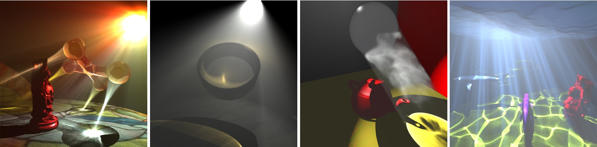

Interactive Volume Caustics in Single-Scattering Media
Wei Hu1, Zhao Dong2*, Ivo Ihrke3, Thorsten Grosch4, Guodong Yuan1, Hans-Peter Seidel2
1Beijing Univeristy of Chemical Technology, China 2MPI Informatik, Germany 3University of British Columbia, Canada 4Universitaet Magdeburg, Germany
*The first two authors contributed equally.

Figure 1: Different rendering results generated by our screen-based interactive volume caustics method. Both, specular and refractive volume caustics in homogeneous and inhomogeneous participating media are handled by our technique. Performance (from left to right): 31fps, 28fps, 11fps, 12.5fps
Introduction
Global illumination effects increase the realism of computer generated scenes significantly. Caustics caused by specular or refractive objects are stunning visual effects, even more so in participating media, where volumetric caustics can be observed, see above figure.
However, most existing methods for computing volumetric caustics are computationally expensive, preventing interactive applications from including this appealing effect. In this paper we propose a novel interactive volume caustics rendering method for single scattering participating media. We derive a simplified physics based model enabling the efficient rendering of volumetric caustics in participating media exhibiting variations in scattering and absorption coefficients as well as the, potentially anisotropic, scattering phase function. We describe a practical GPU-based implementation and evaluate the technique in detail.
Paper Abstract
Volume caustics are intricate illumination patterns formed by light first interacting with a specular surface and subsequently being scattered inside a participating medium. Although this phenomenon can be simulated by existing techniques, image synthesis is usually non-trivial and time-consuming.
Motivated by interactive applications, we propose a novel volume caustics rendering method for single-scattering participating media. Our method is based on the observation that line rendering of illumination rays into the screen buffer establishes a direct light path between the viewer and the light source. This connection is introduced via a single scattering event for every pixel affected by the line primitive. Since the GPU is a parallel processor, the radiance contributions of these light paths to each of the pixels can be computed and accumulated independently. The implementation of our method is straightforward and we show that it can be seamlessly integrated with existing methods for rendering participating media.
We achieve high-quality results at real-time frame rates for large and dynamic scenes containing homogeneous participating media. For inhomogeneous media, our method achieves interactive performance that is close to real-time. Our method is based on a simplified physical model and can thus be used for generating physically plausible previews of expensive lighting simulations quickly.
Materials for Download
- Paper(Preprint) (12MB), to appear in ACM SIGGRAPH Symposium on Interactive 3D Graphics and Games (I3D) 2010 .
- Final video (Free Xvid Codec, 79MB).
- You can check out the video from Youtube.
Bibtex
@INPROCEEDINGS{HDI:2010:VolumeCaustics,
author = {Hu, Wei and Dong, Zhao and Ihrke, Ivo and Grosch, Thorsten and Yuan, Guodong and Seidel, Hans-Peter},
title = {Interactive Volume Caustics in Single-Scattering Media},
booktitle = {I3D '10: Proceedings of the 2010 symposium on Interactive 3D graphics and games},
year = {2010},
pages = {109--117},
publisher = {ACM},
}
Acknowledgements
We would like to thank the anonymous reviewers for their insightful comments. We would like to thank Robert Herzog for very helpful discussions during the development of this paper. We would also like to thank Prof. Chris Wyman for making his code publicly available. Thanks to the Stanford University Computer Graphics Laboratory for the Happy Buddha, Dragon and Bunny models. Thanks to Marko Dabrovic for Sibenik model. Thanks to Robert W. Sumner for the horse mesh animations. Wei Hu is supported by the Young Scientific Researcher Funding of Beijing University of Chemical Technology (No. QN0823), China. Ivo Ihrke is supported by a Feodor-Lynen Fellowship of the Humboldt Foundation, Germany.